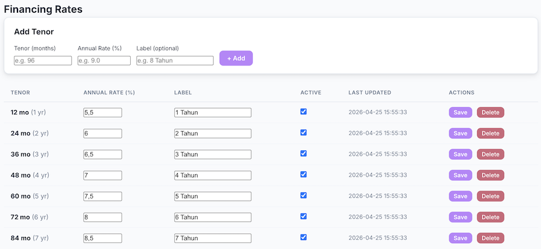

Financing Rates
Configure universal annual interest rates per tenor so the AI can calculate and answer financing questions like "berapa cicilan Honda Civic dp 50 juta tenor 3 tahun?"
editor manager superadmin
Overview
The Financing Rates table stores one universal interest rate per tenor bucket, applicable to all loan types. When the Intent Router detects financing-related keywords in a user query, the matching active rate rows are fetched and passed to the LLM as context — enabling the AI to calculate installment amounts on the fly.
The Intent Router recognises these terms as financing signals:
cicilan, angsuran, dp, uang muka, tenor, kredit, leasing, installment, down payment
Data Fields
Each row in the Financing Rates table represents a single tenor with its applicable annual interest rate:
| Field | Type | Editable | Description |
|---|---|---|---|
tenor_months | Integer | On add only | Loan tenure in months (e.g., 12, 24, 36, 48, 60) |
annual_rate_pct | Real | ✅ | Annual interest rate as a percentage (e.g., 7.5 for 7.5%) |
label | Text | ✅ | Human-readable label shown in the UI (e.g., 3 Tahun). Optional. |
is_active | Boolean | ✅ | Toggle to enable or disable this rate. Only active rates are used in AI calculations. |
updated_at | Timestamp | — | Auto-updated whenever the rate is saved. |
Browse Rates
The Financing Rates page displays all configured tenor rows in a table, sorted by tenor_months.

| Column | Description |
|---|---|
| Tenor | Duration in months, with a year equivalent shown alongside |
| Annual Rate (%) | Inline editable input — the interest rate for this tenor |
| Label | Inline editable text — optional friendly name (e.g., 5 Tahun) |
| Active | Toggle switch — inactive rates are excluded from AI context |
| Last Updated | Timestamp of the last save |
| Actions | Save and Delete buttons per row |
Adding a Tenor
- At the top of the page, fill in the Tenor (months) field — e.g.,
96for 8 years. - Enter the Annual Rate (%) — e.g.,
9.0. - Optionally enter a Label — e.g.,
8 Tahun. - Click "+ Add". The new row appears in the table immediately.
Each tenor_months value must be unique. Adding a duplicate tenor will return an error.
Editing a Rate
Each row has inline editable fields. No modal needed — edit directly in the table.
- Locate the row you want to update.
- Modify the Annual Rate (%) or Label inline.
- Toggle Active on or off as needed.
- Click Save on that row to persist the changes.
Deleting a Rate
Click the Delete button on any row. A confirmation dialog appears. Once confirmed, the row is permanently removed.
Deleted rates cannot be recovered. You can re-add them manually or re-run python setup_financing_db.py on the server to restore the default OJK-based seed data.
OJK Reference Rates
Below the rate table, a read-only OJK Reference panel shows estimated benchmark interest rate ranges for common loan types in Indonesia (Kredit Kendaraan, KPR, KTA), based on BI Rate and OJK data. Use it as a guide when configuring your rates.
The OJK reference table is read-only. Only the rates you configure in the table above are used in AI calculations.
How the AI Uses Financing Rates
When a user submits a financing-related query, the following pipeline runs:
For best AI coverage, keep all common tenors active (12, 24, 36, 48, 60 months). If a user asks for a tenor with no active rate, the AI will note that it is unavailable.